Super shortcut!
Two o’clock in the morning, the generator was out of gas, therefore, out of electricity.
In the mean time, the charcoal heater died and there were only ashes left.
It was freezing, everything was cold—slippers, blankets, pillow, and me. I can’t stop worrying if I would die in my sleep like this.
Can’t take the risk!!! I ran to get my sleeping bag out. I’d rather look like a paramecium than freeze to death.
I didn’t open my sleepy eyes until 9:30 in the morning. To my surprise, it was so HOT outside.
It was really amazing that the temperature fluctuates so dramatically between day and night at this lake area.
The hostess invited me to have breakfast together when she saw me peeking from the tank.
It looked like they were just about to start their breakfast, meaning I wasn’t as late as I thought.
The breakfast was still the momo (kind of Xinjiang-style nag) cut into triangle shape, dipped with homemade shortening.
With some warm milk, it was almost heaven.
Thank god that my digestive system was really tough to take all these dairy products this morning.
Finally I petted my tummy after finishing three big bowls of milk. Well, I guessed I was full already.
After done packing, I told myself I should get going.
This 90 km from Sayram Lake to Korgas city, my last stop in China, is mostly downhill.
It should be nice and easy, as long as I don’t fall into any valley of some sort.
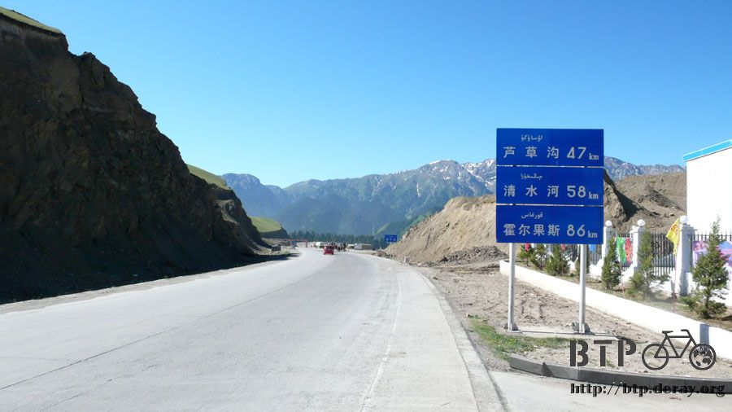
I really had such a wonderful time with Azhanma family, and I felt really sad that at the end,
the best way to show my appreciation was the most direct and practical mean, cash.
The grabbed rice yesterday was 10 RMB, overnight stay was 30.
The charcoal was free—I didn’t want to pay extra for the charcoal, but the kind hostess was worried about me so she threw in those for free.
Dinner last night and breakfast this morning together were 10. So total was 50 RMB.
I woke up Azhanma, who was lying on the grass with a cowboy hat covering his face,
and told him that I would like to pay for the horseback riding before I left.
I did have a good 4-hour ride, but he insisted to charge me only for one hour, which was 30 RMB.
While I was waving goodbye for the last time, the hostess slipped some momo to me for the road... T_T
Thank you all so much for your hospitality. I traveled so far, but you all made me feel like I was home again.
I said “Thank you” in Kazakh to them and finally moved on.
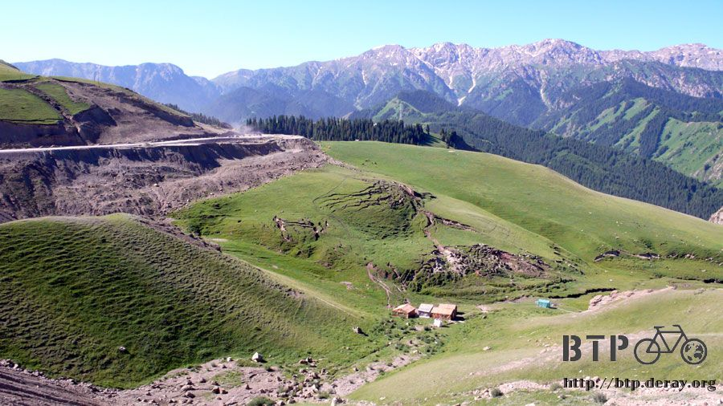
The road condition was terrible after leaving the lake area,
and the steep downhill ride made it so difficult and tiresome to hold tight on the handles.
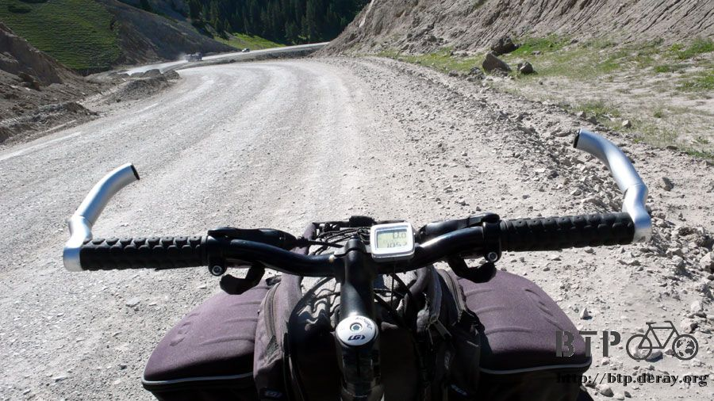
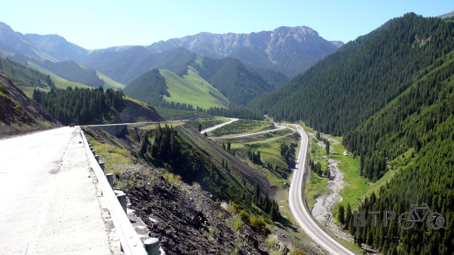
However, the next 40 km of downhill was simply nice and smooth.
The only time I needed to stop was when the herd of sheep was crossing the road.
Talk about those sheep, there must be hundreds of them. They crossed the road with their own speed,
since the shepherd on the horse had no intention to rush them at all.
All the cars were waiting, waiting for those sheep to pass the car, one by one.
They passed my bike—they were gentle animals, they didn’t attack me.
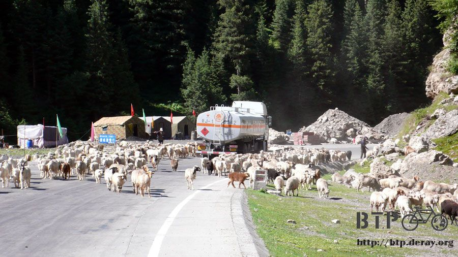
I had to say, it felt very different to watch them passing when I was on Dido or on a horse.
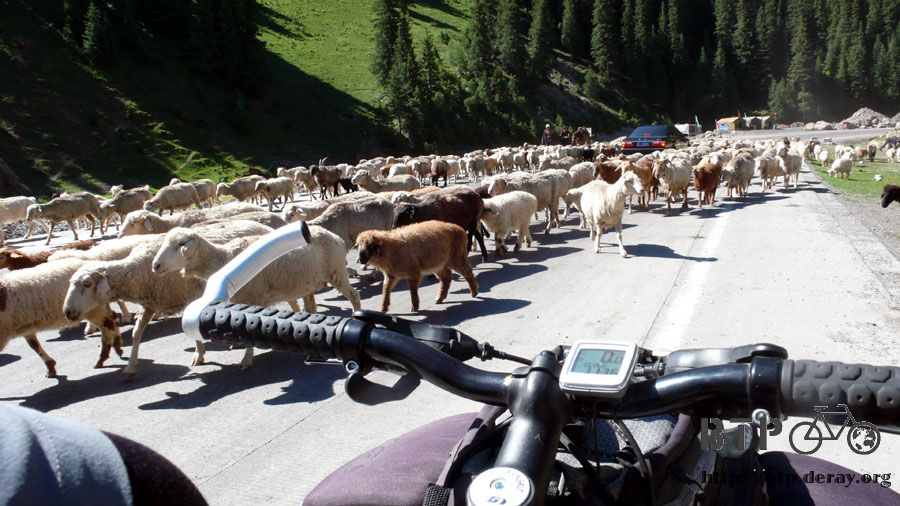
As soon as the sheep passed me, I started to move too.
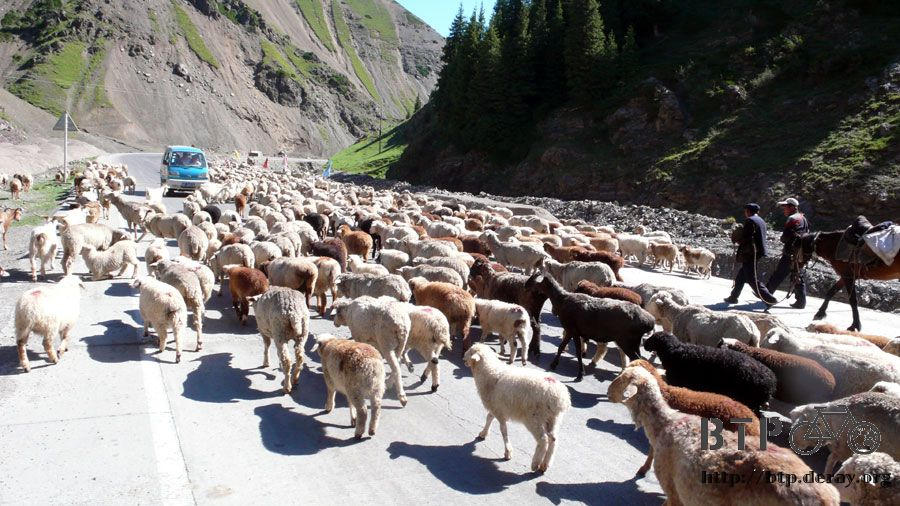
This area was called “Fruit Valley”(Guozhigo), where was famous for its honey and pollen products.
The scenery was magnificent, I thought I finally knew how it felt to ride a bike in the valley.
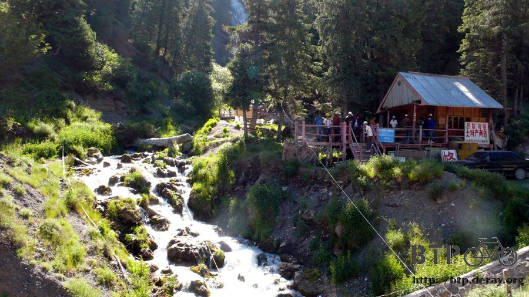
I arrived at my first city, Lucaogou (means: reed valley), at noon.
All the restaurants along the street had numbers on their sign,
as if the only and/or the best way for tourists to choose their favorite place to eat was by number.
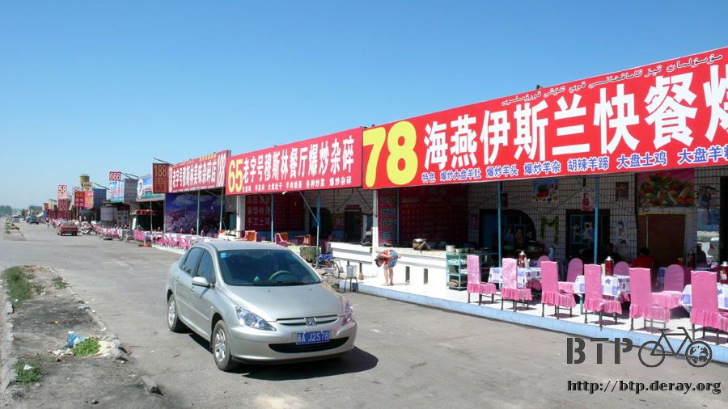
I totally lost my appetitive by this setting, so I decided to continue to Qingshuihe(means: clear and clean river) town, w
hich was around 10 km away from here.
Leaving the valley, I rode on a smooth and straight road, which speeded up the downhill cruising.
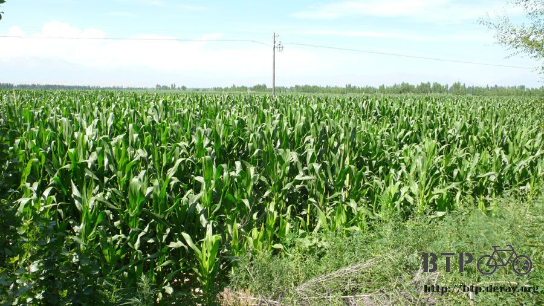
The corps along the roadside also changed dramatically, all you could see here were the taller-than-me corns.
Well, I knew I could not tell from chicks to ducklings. I was definitely sure this must be corn field, I t-h-i-n-k.
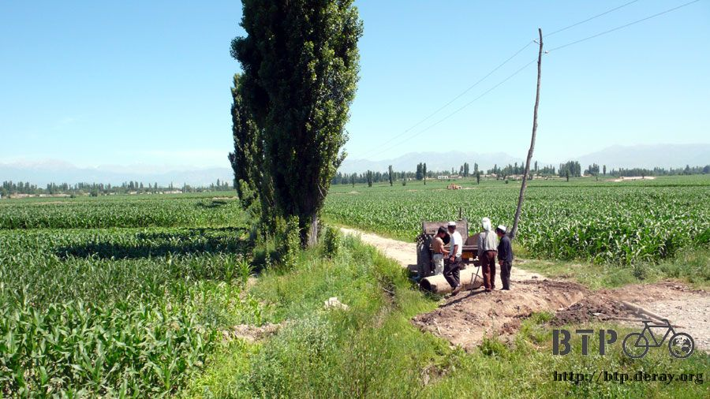
Qingshuihe is not only the name of the town, but also a name of this river.
It is a river without much water but muddy, guess it was from the construction at the upstream area.
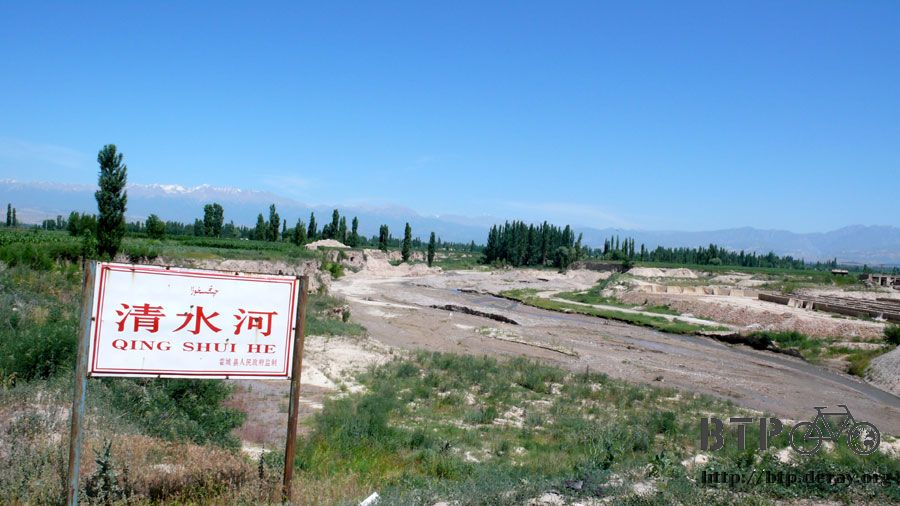
Crops grown at this area were not as healthy as that in other area that I visited earlier.
And I was guessing that those mud walls might attract more weeds/grass, which didn’t help out this situation at all.
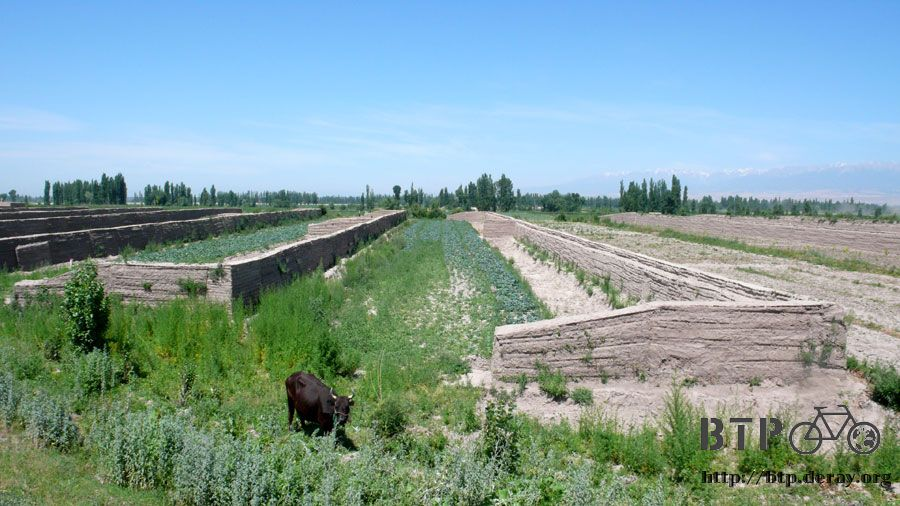
With my sixth sense, I picked a rather quiet restaurant for lunch in Qingshuihe.
I ordered a pork stew and rice, very Chinese style, which made me almost forget that I was at the border of China already.
The food was delectable, the waiters were friendly, but to my surprise, it was NOT quiet after all.
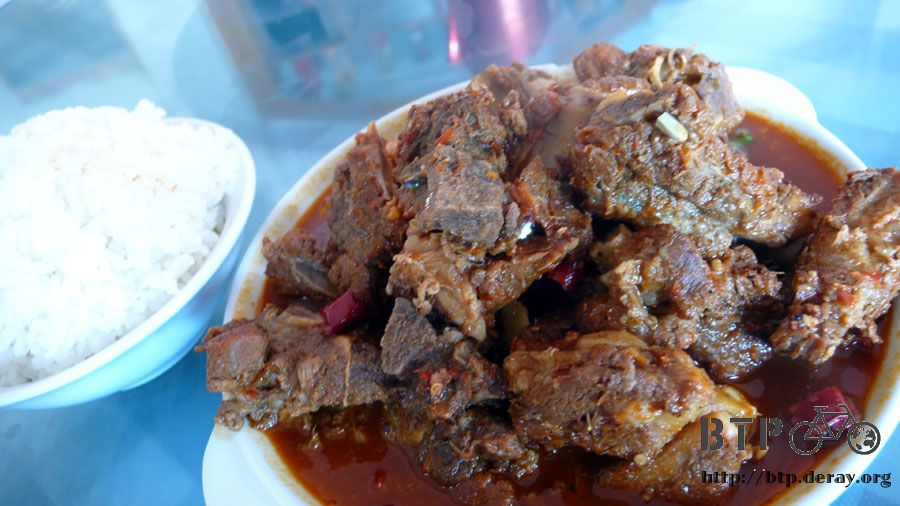
I was so sure that I was the only customer when I stepped into this restaurant.
The waiter was so board that the only thing he can do was to smash the flies.
Then, all of a sudden, several tour buses brought in tons of people into this restaurant.
After lunch, I plugged my laptop onto the power outlet near by the door, to update my blog.
I worked until 2 am last night and only managed to finish the picture part, so I thought I should finish the writing part now.
I didn’t want to cause a scene inside of the restaurant, so I chose to sit by the door.
After those tourists finished their lunch, lots of them came out for cigarettes, and of course they saw me and my Dido.
THEN, I was surrounded by the FAQs and cameras.
I thought it couldn’t get worst than this, so I closed the laptop and chatted with them carelessly,
and hope they would loss interest in me in no time.
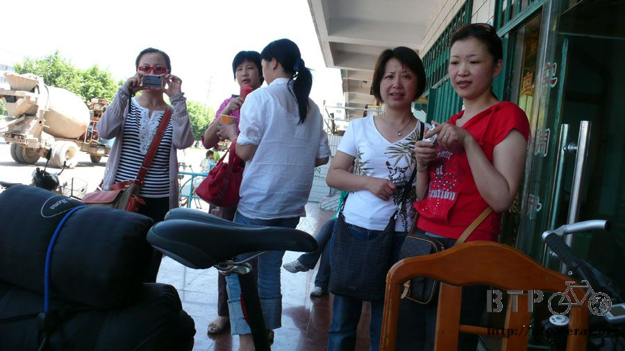
Nope! One by one, those tourists all came out to corner me with their questions, cameras.
Some even asked for my autographs, or had photos with me.
I showed my silly smile in the photos, I signed my autographs with “BTP” and its link.
Maybe it will be their turn to be surprised later when they find out I was from Taiwan.
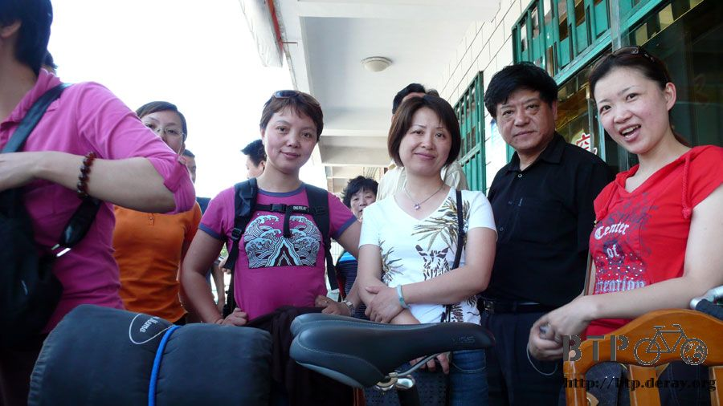
I arrived at the restaurant at 1:30, and planned to finish updating my blog here.
But the tourists from different tour buses came in all the time which made it almost impossible.
Thanks to the owner’s wife gave me a private room to concentrate my work.
By the time I finally finished update, those restaurant staff were finally having their lunch, too.
So I shared with them my blog, and obviously they enjoyed reading them too.
I left at about 5:30, and thought the 30 km to Korgas should be a piece of cake.
A few km later, I saw a border patrol booth. They usually check your ID and let go,
but I didn’t have “their” ID, and I didn’t want to get shot from the back.
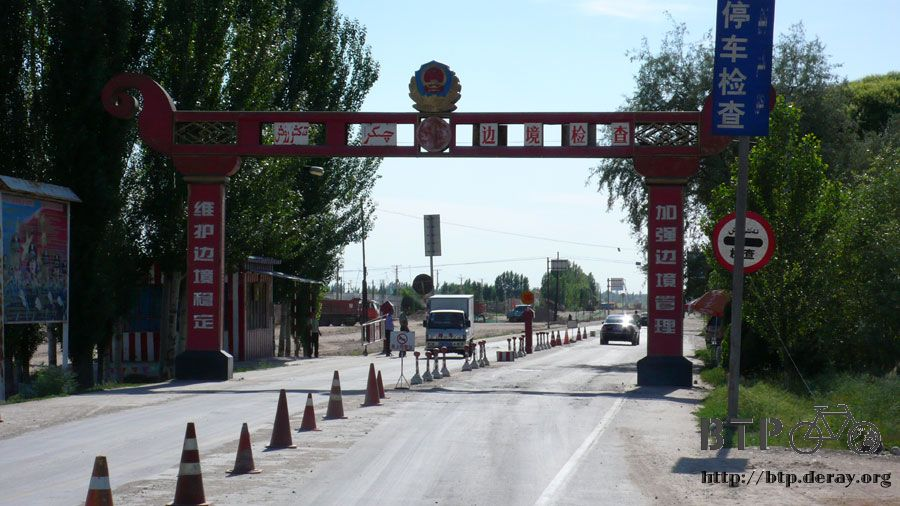
So, I walked over to ask the soldier, who didn’t even notice I was walking over, if they wanted to check my documents.
He looked at me for a while and said, “OK… Show me your document then”.
Ha! I carried these so important and yet so forgettable documents-- my passport and Taiwan-ID-for-entering-China for two months,
and I finally can show them, officially, to some “official people”.
The funny thing was, as soon as that soldier saw my passport; he called his friend over,
“Hey, come quick. Have you ever seen a Taiwan passport?”
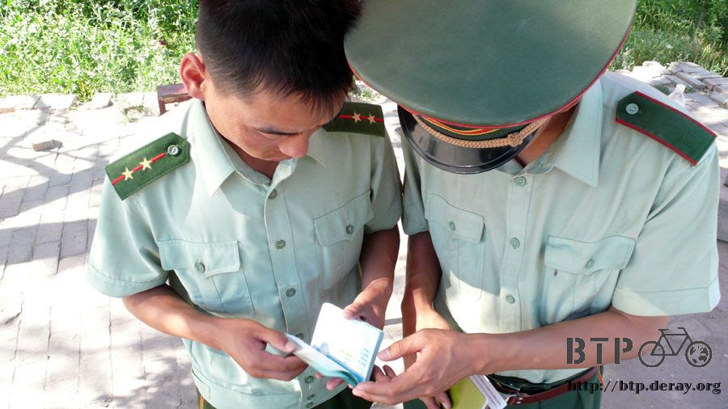
Unbelievably, those two flipped through my passport,
checked the visas from Kazakhstan, Russia, Poland, and EU, and asked where I was going exactly.
Because I am not from China, they had to write down my information on a book for record.
I finally got my documents back and headed to Korgas.
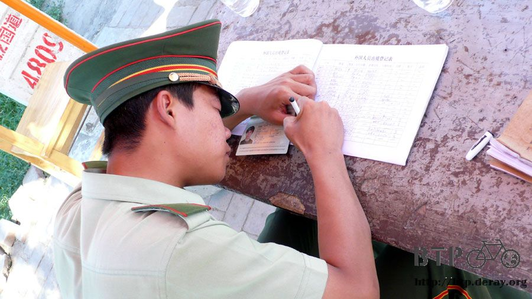
Entering Kazakhstan actually ended the downhill ride. I started to climb up under the hot sun.
It was so hot that I felt that some one was branding my exposed legs.
During the rest of the ride, I stopped wherever I saw a gas station for a popsicle and a drink, to cool down my body.
I tried to ask around the situation at Kazakhstan, and I met a truck driver who said he saw many backpack bikers like me.
Most scary part was he said that he met and shook hands with a “famous” backpack traveler who died in the desert a couple of days later.
I gasped, “Please don’t be too friendly, dude! No hand-shaking is necessary. Head-nodding is more than enough between us.”
That truck driver advised me not to spend the night at Korgas unless it was necessary,
because everything there was expensive and the security was a big concern too.
So he suggested staying at a small town, 62 Tuan (a military group) before Korgas instead.
There is a military group (62 Bingtuan) stationed there, and everything is much cheaper.
So now I had a backup plan if Korgas was as bad as that truck driver described.
Half hour later, I arrived at Korgas, the border town of China and Kazakhstan!
I had pictured it in so many different ways in my brain, and the reality didn’t match any of my imaginations, not even close.
1. It is not exactly a well-developed city. Many constructions were still going on everywhere you go.
2. There are different ethnic groups of people making their trade here, but definitely not as many as I thought it would be.
3. This is such a small city! The main street—OuYa Road, runs through the entire city,
plus two other major roads that cross OuYa Road, are all I can introduce about this city’s “highway” system.
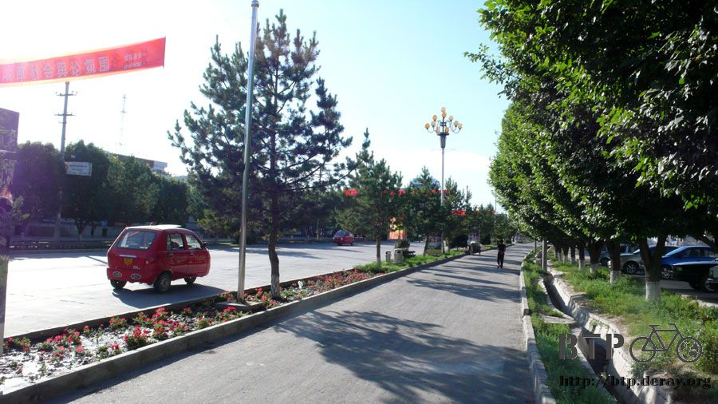
Two buildings that I would like talk about here. One is the Korgas Port World Trading Center.
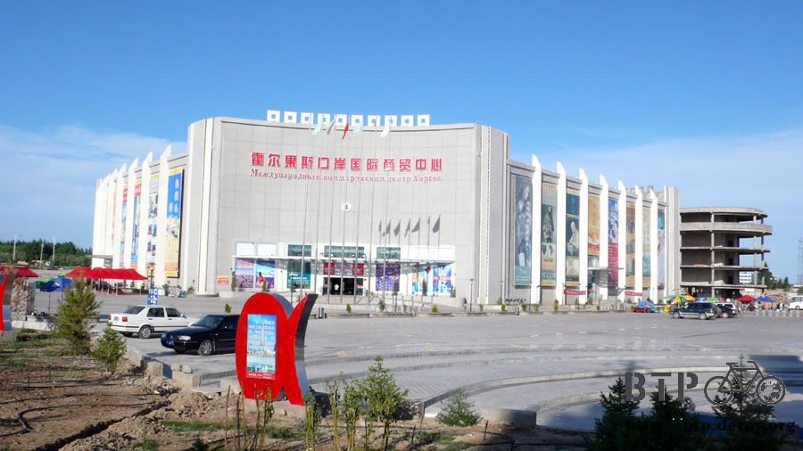
Building of China Customs.
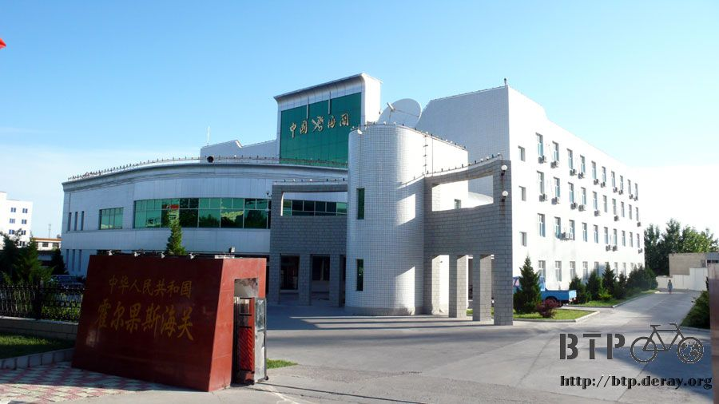
If you go straight here, you will enter the Customs.
Although it was close at this moment and won’t be open again until 10 o’clock tomorrow morning,
many trucks already lined up here the night before.
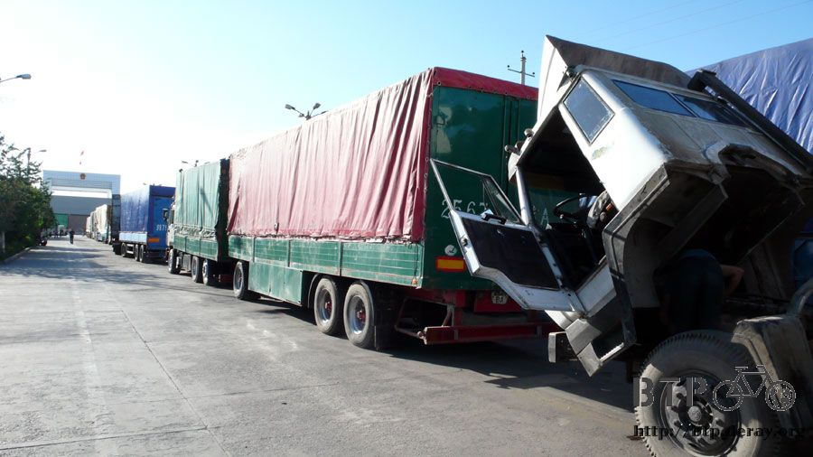
I had to use my hand to block the sun, in order to take pictures against the light.
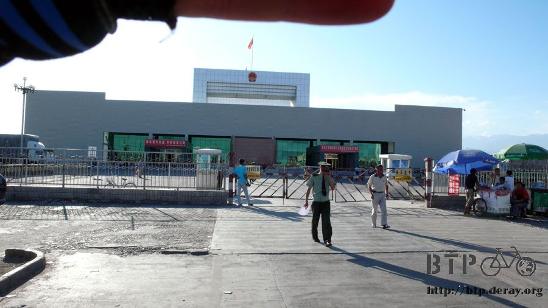
Well, it seemed to be well-accepted to occupy the streets by these trucks like this,
and the drivers were making conversations to kill time.
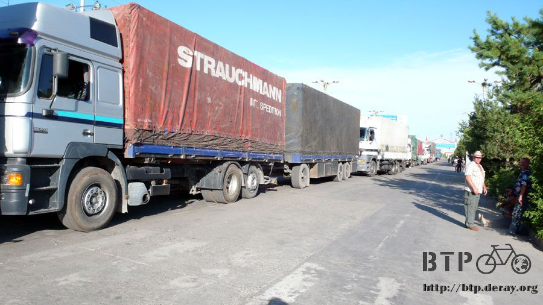
As to me, now I had some idea about the customs/border situation here,
I could start looking for the place to spend the night.
I had asked 5 or 6 hotels and I really hated their price here.
The cheapest one was 60 RMB, not to mention the quality of the room was just terrible.
A guy selling the scallion pancake said it is true that everything is expensive here,
he also suggested me to go back to the previous town, 62 Tuan
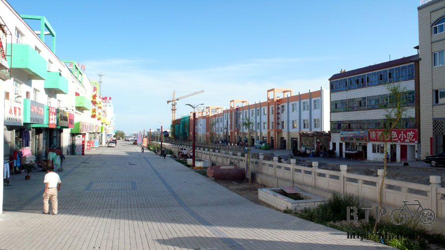
He even told me a shortcut to ride back there. I followed his direction, and ended up at the dead end.
Just when I was wondering what was going on and decided to turn back, I saw another biker.
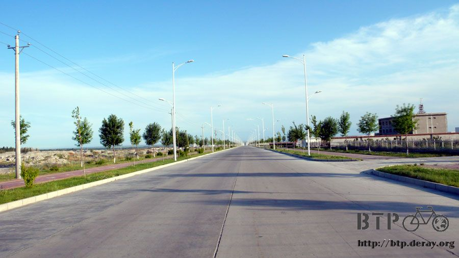
I asked him for direction, he said I could follow him because he was also heading to that town.
Before I knew it, he had already turned into a narrow path.
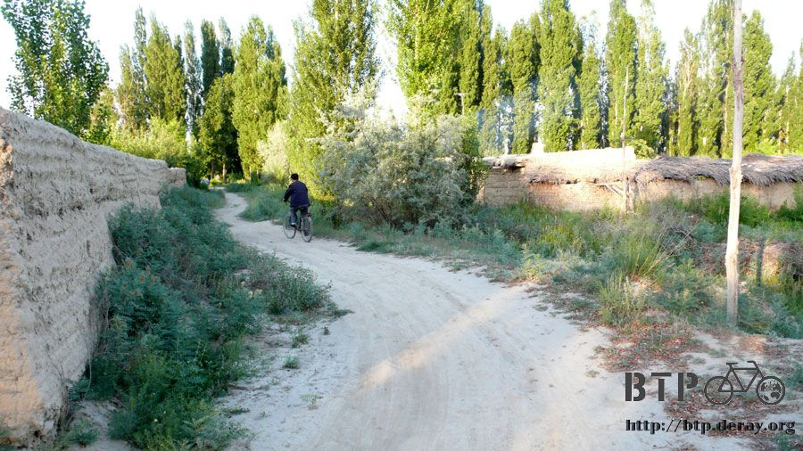
At the beginning, I thought it was a small country road, but it just got worse.
We passed through a cornfield, passed through cows that were munching the grass.
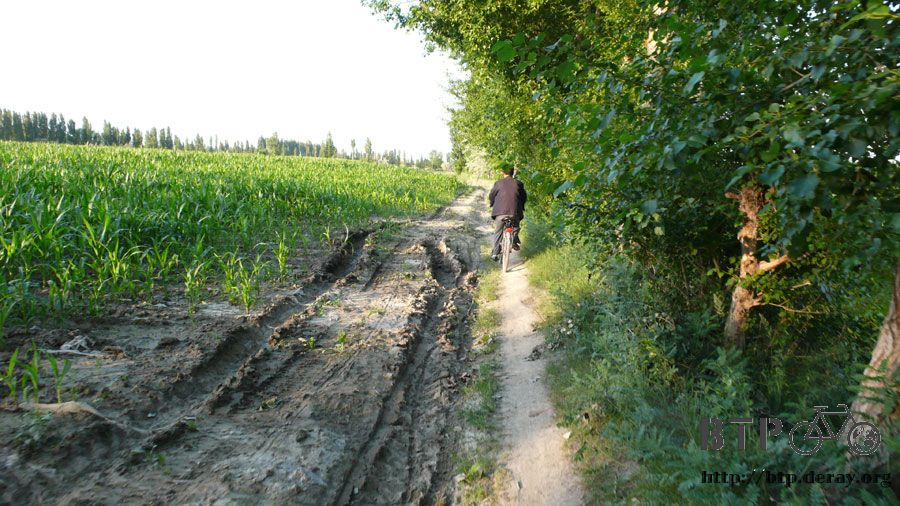
Just when I felt the road condition was getting ridiculously terrible,
I was told to “carry” Dido crossing the can’t-be-narrower stone bridge on the river,
and we went through another similar bridge,
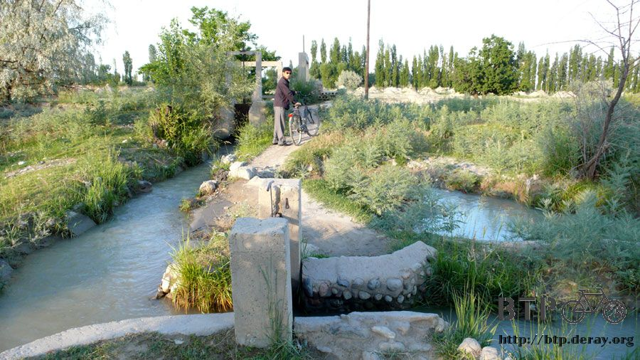
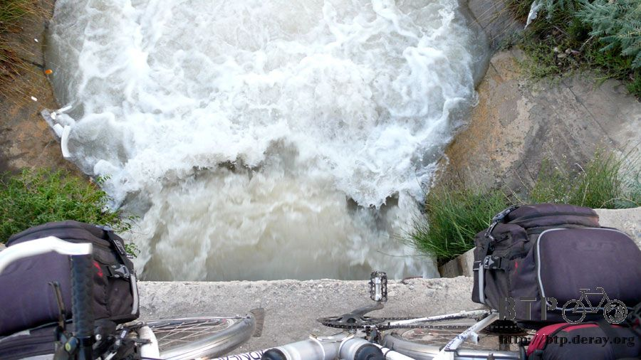
I had to say:” This is really some shortcut, a super shortcut!”
I still had to thank him to lead me through the “shortcut” to 62 Tuan, though.
The first impression I got was the beautiful willow trees on both sides of the street.
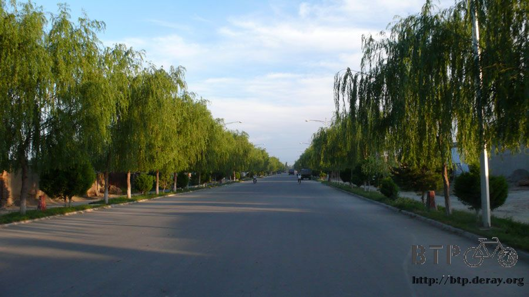
This was also a crowded town. You can find almost every type of shops/stores, including internet café.
I found a cheap B&B nearby this “Ray of Hope” sculpture, only cost me 20 RMB a night, luxury room, too.
This is so much better than those ones at Korgas.
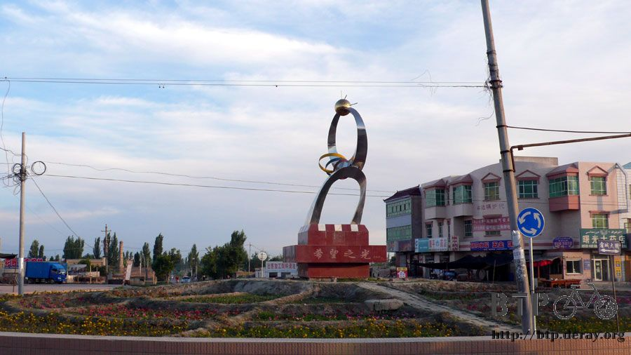
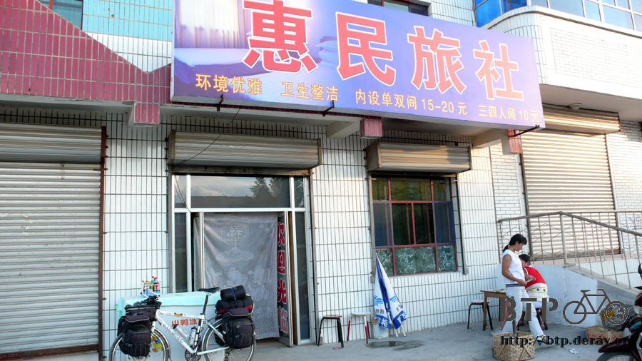
I made a bargain of 50 RMB for 3 nights.
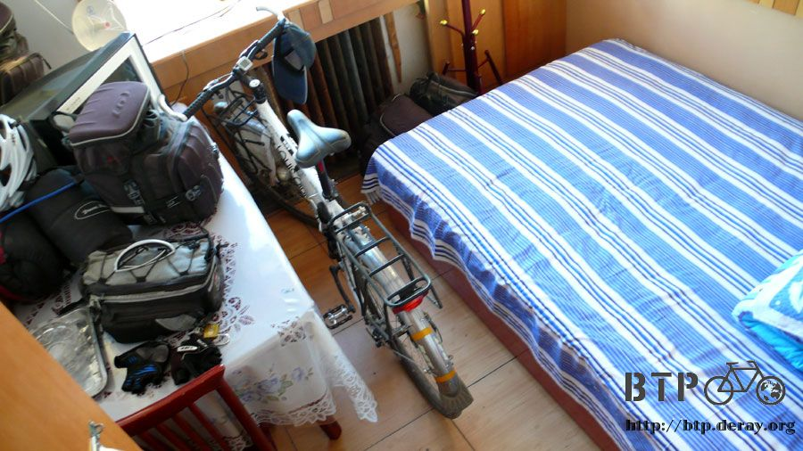
I would look for Kazakhstan map at some local bookstores, exchange currency at the bank,
and try my best to recover myself so I can be ready to start the next stage of journey soon.
It has been two months since I started the BTP tour. Standing at the boarder of China-Kazakhstan,
I know we all are excited to see how the new chapter begins.